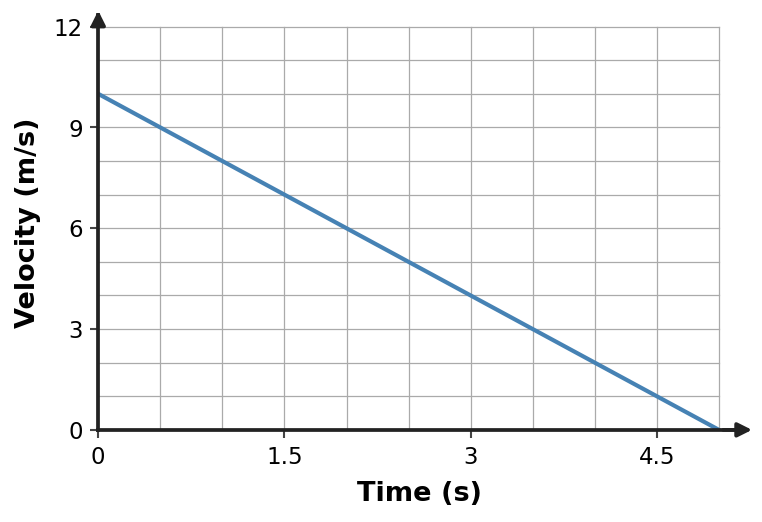
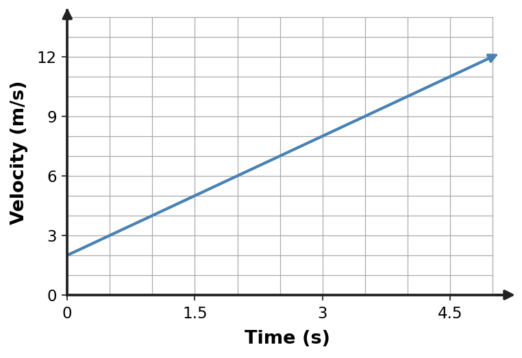

Section 2.1 — Day 1
1. Zoe walks toward the front of a train moving east at 8 m/s. Zoe walks at 1 m/s relative to the train. Explain how Zoe can be moving relative to the ground while also being described using a different motion relative to the train.
- Reference frames change the object’s mass, which changes its motion.
- Relative to the train, Zoe moves east at 1 m/s; relative to the ground, Zoe moves east at 9 m/s. Motion depends on the chosen reference frame.
- Zoe must have the same velocity in every reference frame.
- Zoe is at rest relative to the ground because the train is the only valid frame.
2. Ari walks toward the front of a train moving east at 9 m/s. Ari walks at 2 m/s relative to the train. Explain how Ari can be moving relative to the ground while also being described using a different motion relative to the train.
- Relative to the train, Ari moves east at 2 m/s; relative to the ground, Ari moves east at 11 m/s. Motion depends on the chosen reference frame.
- Ari must have the same velocity in every reference frame.
- Ari is at rest relative to the ground because the train is the only valid frame.
- Reference frames change the object’s mass, which changes its motion.
3. A motion description says, “The backpack remains beside Kai on the seat while trees move backward past the window.” Identify the reference frame used when the backpack is described as remaining beside Kai, and cite the cue.
- the trees outside
- the backpack itself only
- no reference frame is needed
- The vehicle/passenger frame; the backpack stays at a fixed position relative to the passenger/seat.
4. A cart travels a total distance of 120 m in 5 s. Calculate its average speed.
Section 2.1 — Day 2
1. A motion description says, “The backpack remains beside Zoe on the seat while trees move backward past the window.” Identify the reference frame used when the backpack is described as remaining beside Zoe, and cite the cue.
- no reference frame is needed
- The vehicle/passenger frame; the backpack stays at a fixed position relative to the passenger/seat.
- the trees outside
- the backpack itself only
2. Ari walks toward the front of a train moving east at 8 m/s. Ari walks at 3 m/s relative to the train. Explain how Ari can be moving relative to the ground while also being described using a different motion relative to the train.
- Relative to the train, Ari moves east at 3 m/s; relative to the ground, Ari moves east at 11 m/s. Motion depends on the chosen reference frame.
- Ari must have the same velocity in every reference frame.
- Ari is at rest relative to the ground because the train is the only valid frame.
- Reference frames change the object’s mass, which changes its motion.
3. A passenger on a bus says a phone on the seat is at rest. A person on the sidewalk says the phone is moving east with the bus. Compare the two descriptions and explain why using Earth’s surface is convenient for ordinary travel descriptions.
- Only the passenger can be correct because the phone is touching the seat.
- Only the sidewalk observer can be correct because Earth is the unique true frame.
- Both must measure zero velocity because the phone is not sliding.
- Both descriptions can be correct because they use different reference frames. The phone is at rest in the bus frame and moving in the Earth/sidewalk frame. Earth’s surface is a convenient shared everyday frame.
4. A cart travels a total distance of 90 m in 9 s. Calculate its average speed.
Section 2.1 — Day 3
1. A passenger on a bus says a phone on the seat is at rest. A person on the sidewalk says the phone is moving east with the bus. Compare the two descriptions and explain why using Earth’s surface is convenient for ordinary travel descriptions.
- Both must measure zero velocity because the phone is not sliding.
- Both descriptions can be correct because they use different reference frames. The phone is at rest in the bus frame and moving in the Earth/sidewalk frame. Earth’s surface is a convenient shared everyday frame.
- Only the passenger can be correct because the phone is touching the seat.
- Only the sidewalk observer can be correct because Earth is the unique true frame.
2. Ari walks toward the front of a train moving east at 12 m/s. Ari walks at 1 m/s relative to the train. Explain how Ari can be moving relative to the ground while also being described using a different motion relative to the train.
- Relative to the train, Ari moves east at 1 m/s; relative to the ground, Ari moves east at 13 m/s. Motion depends on the chosen reference frame.
- Ari must have the same velocity in every reference frame.
- Ari is at rest relative to the ground because the train is the only valid frame.
- Reference frames change the object’s mass, which changes its motion.
3. Kai walks toward the front of a train moving east at 8 m/s. Kai walks at 2 m/s relative to the train. Explain how Kai can be moving relative to the ground while also being described using a different motion relative to the train.
- Kai must have the same velocity in every reference frame.
- Kai is at rest relative to the ground because the train is the only valid frame.
- Reference frames change the object’s mass, which changes its motion.
- Relative to the train, Kai moves east at 2 m/s; relative to the ground, Kai moves east at 10 m/s. Motion depends on the chosen reference frame.
4. A cart travels a total distance of 60 m in 7 s. Calculate its average speed.
Section 2.2 — Day 1
1. A cart travels a total distance of 100 m in 10 s. Calculate its average speed.
- 0.10 m/s
- 1000 m/s
- 55 m/s
- 10 m/s
2. Sam walks toward the front of a train moving east at 9 m/s. Sam walks at 1 m/s relative to the train. Explain how Sam can be moving relative to the ground while also being described using a different motion relative to the train.
- Sam is at rest relative to the ground because the train is the only valid frame.
- Reference frames change the object’s mass, which changes its motion.
- Relative to the train, Sam moves east at 1 m/s; relative to the ground, Sam moves east at 10 m/s. Motion depends on the chosen reference frame.
- Sam must have the same velocity in every reference frame.
3. On a elevator lobby, a rider’s speedometer reads 18 m/s at one instant. The rider’s average speed over the entire trip is 10 m/s. Explain what each value describes.
- The larger value is average and the smaller value is instantaneous by definition.
- 18 m/s is instantaneous speed at that moment; 10 m/s is total distance divided by total trip time.
- Both values are instantaneous because both use m/s.
- Both values are average because every speed is averaged over time.
4. A cart travels a total distance of 60 m in 7 s. Calculate its average speed.
| Quantity | Value |
|---|---|
| Total distance | 60 m |
| Total time | 7 s |
Section 2.2 — Day 2
1. On a warehouse cart, a rider’s speedometer reads 13 m/s at one instant. The rider’s average speed over the entire trip is 12 m/s. Explain what each value describes.
- Both values are instantaneous because both use m/s.
- Both values are average because every speed is averaged over time.
- The larger value is average and the smaller value is instantaneous by definition.
- 13 m/s is instantaneous speed at that moment; 12 m/s is total distance divided by total trip time.
2. Sam walks toward the front of a train moving east at 8 m/s. Sam walks at 2 m/s relative to the train. Explain how Sam can be moving relative to the ground while also being described using a different motion relative to the train.
- Sam is at rest relative to the ground because the train is the only valid frame.
- Reference frames change the object’s mass, which changes its motion.
- Relative to the train, Sam moves east at 2 m/s; relative to the ground, Sam moves east at 10 m/s. Motion depends on the chosen reference frame.
- Sam must have the same velocity in every reference frame.
3. A robot moves at a constant speed of 9 m/s. At first it moves east, then it turns and moves north while keeping the same speed. Compare its speed and velocity before and after the turn.
- Velocity has no direction, so only position changes.
- The speed remains 9 m/s, but the velocity changes because its direction changes from east to north.
- Both speed and velocity remain constant because the speedometer value is unchanged.
- The speed changes but the velocity does not.
4. A cart travels a total distance of 100 m in 5 s. Calculate its average speed.
| Quantity | Value |
|---|---|
| Total distance | 100 m |
| Total time | 5 s |
Section 2.2 — Day 3
1. A robot moves at a constant speed of 5 m/s. At first it moves east, then it turns and moves north while keeping the same speed. Compare its speed and velocity before and after the turn.
- Both speed and velocity remain constant because the speedometer value is unchanged.
- The speed changes but the velocity does not.
- Velocity has no direction, so only position changes.
- The speed remains 5 m/s, but the velocity changes because its direction changes from east to north.
2. Sam walks toward the front of a train moving east at 12 m/s. Sam walks at 3 m/s relative to the train. Explain how Sam can be moving relative to the ground while also being described using a different motion relative to the train.
- Sam is at rest relative to the ground because the train is the only valid frame.
- Reference frames change the object’s mass, which changes its motion.
- Relative to the train, Sam moves east at 3 m/s; relative to the ground, Sam moves east at 15 m/s. Motion depends on the chosen reference frame.
- Sam must have the same velocity in every reference frame.
3. A cart travels a total distance of 60 m in 8 s. Calculate its average speed.
- 34 m/s
- 7.5 m/s
- 0.13 m/s
- 480 m/s
4. A cart travels a total distance of 70 m in 9 s. Calculate its average speed.
| Quantity | Value |
|---|---|
| Total distance | 70 m |
| Total time | 9 s |
Section 2.3 — Day 1
1. A cart’s velocity changes from 0 m/s to 8 m/s in 2 s. Calculate its average acceleration.
- 4.5 m/s²
- 4 m/s²
- 8 m/s²
- 16 m/s²
2. A motion description says, “The backpack remains beside Ari on the seat while trees move backward past the window.” Identify the reference frame used when the backpack is described as remaining beside Ari, and cite the cue.
- The vehicle/passenger frame; the backpack stays at a fixed position relative to the passenger/seat.
- the trees outside
- the backpack itself only
- no reference frame is needed
3. A skateboarder moves east while slowing down. State the direction of the skateboarder’s velocity and acceleration, and explain why the skateboarder is accelerating even though speed decreases.
- Velocity and acceleration are both east because the skateboarder is moving east.
- Velocity is west and acceleration is east because slowing reverses velocity instantly.
- Acceleration is zero whenever speed decreases.
- Velocity is east; acceleration is west. Acceleration is any change in velocity, including a decrease in speed.
4. A cart’s velocity changes from 3 m/s to 18 m/s in 5 s. Calculate its average acceleration.
| Time | Velocity |
|---|---|
| 0 s | 3 m/s |
| 5 s | 18 m/s |
Section 2.3 — Day 2
1. A skateboarder moves east while slowing down. State the direction of the skateboarder’s velocity and acceleration, and explain why the skateboarder is accelerating even though speed decreases.
- Acceleration is zero whenever speed decreases.
- Velocity is east; acceleration is west. Acceleration is any change in velocity, including a decrease in speed.
- Velocity and acceleration are both east because the skateboarder is moving east.
- Velocity is west and acceleration is east because slowing reverses velocity instantly.
2. A motion description says, “The backpack remains beside Ari on the seat while trees move backward past the window.” Identify the reference frame used when the backpack is described as remaining beside Ari, and cite the cue.
- The vehicle/passenger frame; the backpack stays at a fixed position relative to the passenger/seat.
- the trees outside
- the backpack itself only
- no reference frame is needed
3. Use the velocity–time graph to identify whether the acceleration is positive, negative, or zero and justify your answer from the graph slope.
- zero acceleration because velocity is shown on the vertical axis
- positive acceleration
- acceleration cannot be determined from a velocity–time graph
- negative acceleration

4. A cart’s velocity changes from 2 m/s to 14 m/s in 4 s. Calculate its average acceleration.
| Time | Velocity |
|---|---|
| 0 s | 2 m/s |
| 4 s | 14 m/s |
Section 2.3 — Day 3
1. Use the velocity–time graph to identify whether the acceleration is positive, negative, or zero and justify your answer from the graph slope.
- acceleration cannot be determined from a velocity–time graph
- positive acceleration
- zero acceleration because velocity is shown on the vertical axis
- negative acceleration

2. A motion description says, “The backpack remains beside Ari on the seat while trees move backward past the window.” Identify the reference frame used when the backpack is described as remaining beside Ari, and cite the cue.
- The vehicle/passenger frame; the backpack stays at a fixed position relative to the passenger/seat.
- the trees outside
- the backpack itself only
- no reference frame is needed
3. A cart’s velocity changes from 0 m/s to 4 m/s in 2 s. Calculate its average acceleration.
- 4 m/s²
- 8 m/s²
- 2.5 m/s²
- 2 m/s²
4. A cart’s velocity changes from 1 m/s to 10 m/s in 3 s. Calculate its average acceleration.
| Time | Velocity |
|---|---|
| 0 s | 1 m/s |
| 3 s | 10 m/s |
Section 2.4 — Day 1
1. Two compact objects of different masses are released together in a vacuum chamber near Earth. Predict which reaches the floor first and explain using the meaning of free fall.
- The heavier object arrives first because gravity gives it a larger acceleration.
- The lighter object arrives first because it has less inertia.
- Neither accelerates because a vacuum removes gravity.
- They reach the floor together if released from the same height with the same initial velocity. With air resistance ignored, both have the same downward acceleration g.
2. A cart travels a total distance of 60 m in 9 s. Calculate its average speed.
- 540 m/s
- 34.5 m/s
- 6.66667 m/s
- 0.15 m/s
3. Ignoring air resistance, an object is dropped from rest. Using g ≈ 10 m/s², determine the speed it has gained after 3 s.
- 30 m/s upward
- 30 m/s downward
- 13 m/s downward
- 15 m/s downward
4. Ignoring air resistance, an object is dropped from rest. Using g ≈ 10 m/s², determine the speed it has gained after 4 s.
Section 2.4 — Day 2
1. Ignoring air resistance, an object is dropped from rest. Using g ≈ 10 m/s², determine the speed it has gained after 5 s.
- 15 m/s downward
- 25 m/s downward
- 50 m/s upward
- 50 m/s downward
2. A cart travels a total distance of 100 m in 7 s. Calculate its average speed.
- 700 m/s
- 53.5 m/s
- 14.28571 m/s
- 0.07 m/s
3. For ideal free fall from rest, use d = ½gt² with g ≈ 10 m/s². Compare the total distance fallen after 1 s and 2 s. Then explain why a coffee filter falling at terminal speed would not follow this same pattern.
- Distance is proportional to 1/t².
- After 1 s: 5 m; after 2 s: 20 m. The ideal distance grows with t². A filter with significant air resistance is not in ideal free fall and can reach nearly constant speed.
- Distance increases by the same amount each second because acceleration is constant.
- The filter follows exactly the same t² pattern because all falling objects are always in free fall.
4. Ignoring air resistance, an object is dropped from rest. Using g ≈ 10 m/s², determine the speed it has gained after 3 s.
Section 2.4 — Day 3
1. For ideal free fall from rest, use d = ½gt² with g ≈ 10 m/s². Compare the total distance fallen after 3 s and 4 s. Then explain why a coffee filter falling at terminal speed would not follow this same pattern.
- Distance increases by the same amount each second because acceleration is constant.
- The filter follows exactly the same t² pattern because all falling objects are always in free fall.
- Distance is proportional to 1/t².
- After 3 s: 45 m; after 4 s: 80 m. The ideal distance grows with t². A filter with significant air resistance is not in ideal free fall and can reach nearly constant speed.
2. A cart travels a total distance of 70 m in 5 s. Calculate its average speed.
- 350 m/s
- 37.5 m/s
- 14 m/s
- 0.07 m/s
3. Two compact objects of different masses are released together in a vacuum chamber near Earth. Predict which reaches the floor first and explain using the meaning of free fall.
- Neither accelerates because a vacuum removes gravity.
- They reach the floor together if released from the same height with the same initial velocity. With air resistance ignored, both have the same downward acceleration g.
- The heavier object arrives first because gravity gives it a larger acceleration.
- The lighter object arrives first because it has less inertia.
4. Ignoring air resistance, an object is dropped from rest. Using g ≈ 10 m/s², determine the speed it has gained after 2 s.
Section 2.5 — Day 1
1. Which velocity vector correctly represents motion down at 2 m/s if the reference arrow for 2 m/s has the stated scale?
- a dot with no direction
- An arrow pointing down with a length representing 2 m/s.
- an arrow pointing opposite down with the correct length
- an arrow pointing down with zero length
2. A robot moves at a constant speed of 4 m/s. At first it moves east, then it turns and moves north while keeping the same speed. Compare its speed and velocity before and after the turn.
- The speed remains 4 m/s, but the velocity changes because its direction changes from east to north.
- Both speed and velocity remain constant because the speedometer value is unchanged.
- The speed changes but the velocity does not.
- Velocity has no direction, so only position changes.
3. Vector A is 4 cm long and points east. Vector B is 4 cm long and points north. Determine whether the object’s velocity changed and explain what feature of the vectors supports your answer.
- No; equal arrow lengths guarantee equal velocity.
- No; direction is not part of velocity.
- Yes only if the arrow lengths also change.
- Yes. The speed magnitude can be the same, but the direction changes from east to north, so velocity changes.
4. A cart’s velocity changes from 3 m/s to 18 m/s in 5 s. Calculate its average acceleration.
Section 2.5 — Day 2
1. Vector A is 4 cm long and points east. Vector B is 4 cm long and points north. Determine whether the object’s velocity changed and explain what feature of the vectors supports your answer.
- Yes only if the arrow lengths also change.
- Yes. The speed magnitude can be the same, but the direction changes from east to north, so velocity changes.
- No; equal arrow lengths guarantee equal velocity.
- No; direction is not part of velocity.
2. A robot moves at a constant speed of 8 m/s. At first it moves east, then it turns and moves north while keeping the same speed. Compare its speed and velocity before and after the turn.
- The speed remains 8 m/s, but the velocity changes because its direction changes from east to north.
- Both speed and velocity remain constant because the speedometer value is unchanged.
- The speed changes but the velocity does not.
- Velocity has no direction, so only position changes.
3. A position–time graph is shown. Write a motion description consistent with the graph, then identify one common incorrect interpretation and correct it.
- The object is climbing a physical hill because the line rises.
- The object is accelerating because position increases.
- The object is at rest because the line is straight.
- The object moves in the positive direction at constant velocity 2 m/s. The graph height represents position, not physical height above the ground.

4. A cart’s velocity changes from 2 m/s to 14 m/s in 4 s. Calculate its average acceleration.
Section 2.5 — Day 3
1. A position–time graph is shown. Write a motion description consistent with the graph, then identify one common incorrect interpretation and correct it.
- The object is at rest because the line is straight.
- The object moves in the positive direction at constant velocity 4 m/s. The graph height represents position, not physical height above the ground.
- The object is climbing a physical hill because the line rises.
- The object is accelerating because position increases.

2. A robot moves at a constant speed of 6 m/s. At first it moves east, then it turns and moves north while keeping the same speed. Compare its speed and velocity before and after the turn.
- The speed remains 6 m/s, but the velocity changes because its direction changes from east to north.
- Both speed and velocity remain constant because the speedometer value is unchanged.
- The speed changes but the velocity does not.
- Velocity has no direction, so only position changes.
3. Which velocity vector correctly represents motion left at 5 m/s if the reference arrow for 5 m/s has the stated scale?
- an arrow pointing opposite left with the correct length
- an arrow pointing left with zero length
- a dot with no direction
- An arrow pointing left with a length representing 5 m/s.
4. A cart’s velocity changes from 1 m/s to 10 m/s in 3 s. Calculate its average acceleration.